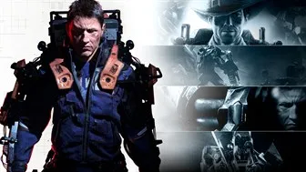

Descripción del Juego
"The Surge" es un juego de rol de acción desarrollado por Deck13 Interactive y publicado por Focus Home Interactive. Lanzado en 2017, el juego se ambienta en un futuro distópico donde los jugadores asumen el papel de un trabajador equipado con un exoesqueleto que debe enfrentarse a amenazas mecánicas y humanas.
La jugabilidad se centra en la exploración, el combate estratégico y la mejora del personaje a través de la adquisición y mejora de partes de exoesqueleto.
Mecánicas de Juego
En "The Surge", los jugadores enfrentan desafíos tanto en combate como en entornos hostiles. Las características incluyen:
- Combate: Utiliza tu exoesqueleto para atacar y defenderte, apuntando a partes específicas del cuerpo para obtener ventajas tácticas.
- Mejora: Recoge y mejora piezas de exoesqueleto y armas para personalizar tu personaje y adaptarte a diferentes situaciones.
- Exploración: Navega por entornos complejos y descubre secretos mientras te enfrentas a enemigos y jefes desafiantes.
Armas y Enemigos
El juego presenta una variedad de armas, desde armas cuerpo a cuerpo hasta armas de fuego, cada una con su propio estilo de juego. Enfrenta a enemigos mecánicos y humanos que presentan diferentes patrones de ataque y estrategias.

Expansiones y Contenido Adicional
"The Surge" ha recibido expansiones y contenido adicional que expanden la historia y presentan nuevos desafíos. Entre ellas se incluye "A Walk in the Park", una expansión que lleva a los jugadores a un parque temático devastado.
Recepción y Críticas
El juego ha sido elogiado por su sistema de combate, diseño de niveles y enfoque en la progresión del personaje. Sin embargo, también ha recibido críticas por su dificultad y curva de aprendizaje. La expansión "A Walk in the Park" también fue bien recibida por agregar variedad al entorno del juego.